Contents
Section1: Part A & B (without any filtering)
clc clear close all data = load ('ex2data.mat'); eeg = transpose(data.eeg); indd = transpose(data.indd); indf = transpose(data.indf); Fs = 250; % number of regular stimuli = 420 & number of irregular stimuli = 74 % Part A sweeps_interval1 = [-50 500]; %in milli seconds [t, Mean_irreg] = Sync_mean(eeg, indd,sweeps_interval1 , Fs); figure(Name='Averaged irregular response') plot(t,Mean_irreg), title('Averaged irregular response, number of sweeps:', num2str(length(indd)),'FontSize',13,'Color','red'), xlabel('time (milli seconds)'); [t, Mean_reg] = Sync_mean(eeg, indf,sweeps_interval1 , Fs); figure(Name='Averaged regular response') plot(t,Mean_reg), title('Averaged regular response, number of sweeps:', num2str(length(indf)),'FontSize',13,'Color','red'), xlabel('time (milli seconds)'); % Part B.1 [t1, Mean_reg_even] = Sync_mean(eeg, indf,sweeps_interval1 , Fs, 2); [t2, Mean_reg_odd] = Sync_mean(eeg, indf,sweeps_interval1 , Fs, 1); figure(Name='Average of even and odd sweeps of regular response') subplot(311), plot(t1, Mean_reg_even), title('Averaged even regular response', 'FontSize',13,'Color','red'), xlabel('time (milli seconds)'); subplot(312), plot(t2, Mean_reg_odd), title('Averaged odd regular response', 'FontSize',13,'Color','red'), xlabel('time (milli seconds)'); subplot(313), plot(t, Mean_reg_even-Mean_reg_odd), title('Diff of odd and even' ,'FontSize',13,'Color','red'), xlabel('time (milli seconds)'); % Part B.2 sweeps_interval2 = [-15 200]; % in milli seconds n_of_sweeps = [10 50 100 200 300 400 length(indf)]; snr_estimate = SNR_estimate(eeg,indf,sweeps_interval2,Fs,n_of_sweeps); figure(Name='SNR estimation with different numbers of sweeps') plot(n_of_sweeps, snr_estimate,"Marker","o" ), title('SNR estimation', 'FontSize',13,'Color','red'), xlabel('number of sweeps'), ylabel('Estimated SNR'), grid on
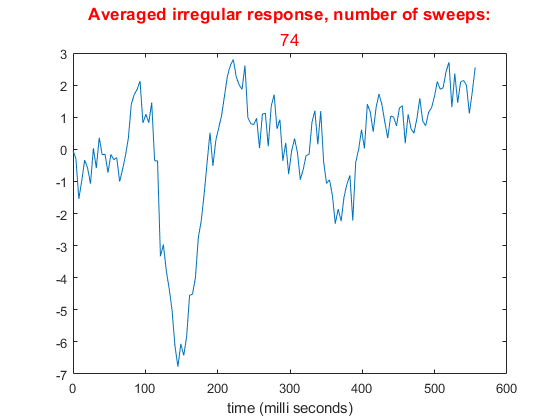
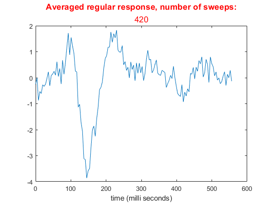
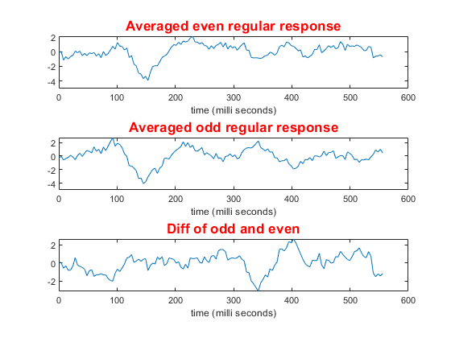
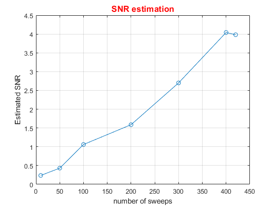
Section2: Comparing different filters with each other
close all clear clc data = load ('ex2data.mat'); eeg = transpose(data.eeg); indd = transpose(data.indd); indf = transpose(data.indf); Fs = 250; sweeps_interval = [-50 500]; %in milli seconds [~, Mean_irreg] = Sync_mean(eeg, indd,sweeps_interval , Fs); [~, Mean_reg] = Sync_mean(eeg, indf,sweeps_interval , Fs); % f1: FIR_Equiripple_Filter: FIR_eq = FIR_Equiripple_Filter; f1_eeg = fliplr(filter(FIR_eq.Numerator,1,fliplr(filter(FIR_eq.Numerator ,1,eeg)))); f1_filt_eeg = filtfilt(FIR_eq.Numerator ,1,eeg); [~, Mean_irreg_f1] = Sync_mean(f1_eeg, indd,sweeps_interval , Fs); [~, Mean_reg_f1] = Sync_mean(f1_eeg, indf,sweeps_interval , Fs); [~, Mean_irreg_f1_filt] = Sync_mean(f1_filt_eeg, indd,sweeps_interval , Fs); [~, Mean_reg_f1_filt] = Sync_mean(f1_filt_eeg, indf,sweeps_interval , Fs); % freqz(FIR_eq.Numerator, 1) % f2: FIR_Least_squares_Filter: FIR_L_s = FIR_Least_squares_Filter; f2_eeg = fliplr(filter(FIR_L_s.Numerator,1,fliplr(filter(FIR_L_s.Numerator ,1,eeg)))); f2_filt_eeg = filtfilt(FIR_L_s.Numerator ,1,eeg); [~, Mean_irreg_f2] = Sync_mean(f2_eeg, indd,sweeps_interval , Fs); [~, Mean_reg_f2] = Sync_mean(f2_eeg, indf,sweeps_interval , Fs); [~, Mean_irreg_f2_filt] = Sync_mean(f2_filt_eeg, indd,sweeps_interval , Fs); [~, Mean_reg_f2_filt] = Sync_mean(f2_filt_eeg, indf,sweeps_interval , Fs); % freqz(FIR_L_s.Numerator, 1) % f3: FIR_Window_Bartlett_Hanning_Filter: FIR_Bartlett_Hanning = FIR_Window_Bartlett_Hanning_Filter; f3_eeg = fliplr(filter(FIR_Bartlett_Hanning,fliplr(filter(FIR_Bartlett_Hanning.Numerator,1,eeg)))); f3_filt_eeg = filtfilt(FIR_Bartlett_Hanning.Numerator, 1, eeg); [~, Mean_irreg_f3] = Sync_mean(f3_eeg, indd,sweeps_interval , Fs); [~, Mean_reg_f3] = Sync_mean(f3_eeg, indf,sweeps_interval , Fs); [~, Mean_irreg_f3_filt] = Sync_mean(f3_filt_eeg, indd,sweeps_interval , Fs); [~, Mean_reg_f3_filt] = Sync_mean(f3_filt_eeg, indf,sweeps_interval , Fs); % freqz(FIR_Bartlett_Hanning.Numerator, 1) % f4: IIR_Butterworth_Filter IIR_Butter = IIR_Butterworth_Filter(); f4_eeg = fliplr(filter(IIR_Butter,fliplr(filter(IIR_Butter,eeg)))); f4_filt_eeg = filtfilt(IIR_Butter.sosMatrix, IIR_Butter.ScaleValues, eeg); [~, Mean_irreg_f4] = Sync_mean(f4_eeg, indd,sweeps_interval , Fs); [~, Mean_reg_f4] = Sync_mean(f4_eeg, indf,sweeps_interval , Fs); [~, Mean_irreg_f4_filt] = Sync_mean(f4_filt_eeg, indd,sweeps_interval , Fs); [~, Mean_reg_f4_filt] = Sync_mean(f4_filt_eeg, indf,sweeps_interval , Fs); % freqz(IIR_Butter) % f5: IIR_Elliptic_Filter IIR_Elliptic = IIR_Elliptic_Filter(); f5_eeg = fliplr(filter(IIR_Elliptic,fliplr(filter(IIR_Elliptic,eeg)))); f5_filt_eeg = filtfilt(IIR_Elliptic.sosMatrix,IIR_Elliptic.ScaleValues, eeg); [~, Mean_irreg_f5] = Sync_mean(f5_eeg, indd,sweeps_interval , Fs); [~, Mean_reg_f5] = Sync_mean(f5_eeg, indf,sweeps_interval , Fs); [~, Mean_irreg_f5_filt] = Sync_mean(f5_filt_eeg, indd,sweeps_interval , Fs); [~, Mean_reg_f5_filt] = Sync_mean(f5_filt_eeg, indf,sweeps_interval , Fs); % freqz(IIR_Elliptic) % f6: IIR_Chebyshev_Filter IIR_Chebyshev = IIR_Chebyshev_Filter(); f6_eeg = fliplr(filter(IIR_Chebyshev,fliplr(filter(IIR_Chebyshev,eeg)))); f6_filt_eeg = filtfilt(IIR_Chebyshev.sosMatrix, IIR_Chebyshev.ScaleValues, eeg); [~, Mean_irreg_f6] = Sync_mean(f6_eeg, indd,sweeps_interval , Fs); [~, Mean_reg_f6] = Sync_mean(f6_eeg, indf,sweeps_interval , Fs); [~, Mean_irreg_f6_filt] = Sync_mean(f6_filt_eeg, indd,sweeps_interval , Fs); [~, Mean_reg_f6_filt] = Sync_mean(f6_filt_eeg, indf,sweeps_interval , Fs); % freqz(IIR_Chebyshev) % f7: High pass + Low pass butterworth High_Butter = High_Pass_Butterworth(); Low_Butter = Low_Pass_Butterworth(); eeg_HL = fliplr(filter(High_Butter,fliplr(filter(High_Butter,eeg)))); eeg_HL = fliplr(filter(Low_Butter,fliplr(filter(Low_Butter,eeg_HL)))); [~, Mean_irreg_HL] = Sync_mean(eeg_HL, indd,sweeps_interval , Fs); [t, Mean_reg_HL] = Sync_mean(eeg_HL, indf,sweeps_interval , Fs); %comparing mean regular responses after & befor filtering(self implemented 0 phase) figure(Name='Comparing mean regular responses before and after filtering(self implemented 0 phase)') plot(t, Mean_reg), title('mean regular responses before and after filtering', 'FontSize',13,'Color','red'), xlabel('Time (mili seconds)'), hold on, plot(t, Mean_reg_f1), hold on, plot(t, Mean_reg_f2), hold on, plot(t, Mean_reg_f3), hold on, plot(t, Mean_reg_f4), hold on, plot(t, Mean_reg_f5), hold on, plot(t, Mean_reg_f6) hold on, plot(t, Mean_reg_HL) legend('Before filtering','FIR Equiripple Filter', 'FIR Least squares Filter', 'FIR Bartlett Hanning', ... 'IIR Butterworth Filter','IIR Elliptic Filter','IIR Chebyshev Filter', 'High + Low pass filter') %comparing mean regular responses after & befor filtering(filtfilt method) figure(Name='Comparing mean regular responses before and after filtering(filtfilt method)') plot(t, Mean_reg), title('mean regular responses before and after filtering', 'FontSize',13,'Color','red'), xlabel('Time (mili seconds)'), hold on, plot(t, Mean_reg_f1_filt), hold on, plot(t, Mean_reg_f2_filt), hold on, plot(t, Mean_reg_f3_filt), hold on, plot(t, Mean_reg_f5_filt) legend('Before filtering','FIR Equiripple Filter', 'FIR Least squares Filter', 'FIR Bartlett Hanning','IIR Elliptic Filter') figure(Name='Comparing mean regular responses before and after filtering(filtfilt method), IIR Butterworth') plot(t, Mean_reg), title('mean regular responses before and after filtering', 'FontSize',13,'Color','red'), xlabel('Time (mili seconds)'), hold on, plot(t, Mean_reg_f4_filt) legend('Before filtering','IIR Butterworth Filter') figure(Name='Comparing mean regular responses before and after filtering(filtfilt method), IIR Chebyshev') plot(t, Mean_reg), title('mean regular responses before and after filtering', 'FontSize',13,'Color','red'), xlabel('Time (mili seconds)'), hold on, plot(t, Mean_reg_f6_filt) legend('Before filtering','IIR Chebyshev Filter') %comparing mean irregular responses after & befor filtering(self implemented 0 phase) figure(Name='Comparing mean irregular responses before and after filtering(self implemented 0 phase)') plot(t, Mean_reg), title('mean irregular responses before and after filtering', 'FontSize',13,'Color','red'), xlabel('Time (mili seconds)'), hold on, plot(t, Mean_irreg_f1), hold on, plot(t, Mean_irreg_f2), hold on, plot(t, Mean_irreg_f3), hold on, plot(t, Mean_irreg_f4), hold on, plot(t, Mean_irreg_f5), hold on, plot(t, Mean_irreg_f6) hold on, plot(t, Mean_reg_HL) legend('Before filtering','FIR Equiripple Filter', 'FIR Least squares Filter', 'FIR Bartlett Hanning', ... 'IIR Butterworth Filter','IIR Elliptic Filter','IIR Chebyshev Filter', 'High + Low pass filter') %comparing mean irregular responses after & befor filtering(filtfilt method) figure(Name='Comparing mean irregular responses before and after filtering(filtfilt method)') plot(t, Mean_irreg), title('mean irregular responses before and after filtering', 'FontSize',13,'Color','red'), xlabel('Time (mili seconds)'), hold on, plot(t, Mean_irreg_f1_filt), hold on, plot(t, Mean_irreg_f2_filt), hold on, plot(t, Mean_irreg_f3_filt), hold on, plot(t, Mean_irreg_f5_filt) legend('Before filtering','FIR Equiripple Filter', 'FIR Least squares Filter', 'FIR Bartlett Hanning','IIR Elliptic Filter') % Comparing PSD of EEG before and after filtering (self implemented 0 phase filters) figure(Name='Comparing PSD of EEG before and after filtering(self implemented 0 phase filters)') h=spectrum.welch; psd(h,eeg, 'fs', Fs), hold on, psd(h,f1_eeg, 'fs', Fs), hold on, psd(h,f2_eeg, 'fs', Fs), hold on, psd(h,f3_eeg, 'fs', Fs), hold on psd(h,f4_eeg, 'fs', Fs), hold on, psd(h,f5_eeg, 'fs', Fs), hold on, psd(h,f6_eeg, 'fs', Fs) legend('Before filtering','FIR Equiripple Filter', 'FIR Least squares Filter', 'FIR Bartlett Hanning', ... 'IIR Butterworth Filter','IIR Elliptic Filter','IIR Chebyshev Filter') % Comparing PSD of EEG before and after filtering (filtfilt method) figure(Name='Comparing PSD of EEG before and after filtering(filtfilt method)') h=spectrum.welch; psd(h,eeg, 'fs', Fs), hold on, psd(h,f1_filt_eeg, 'fs', Fs), hold on, psd(h,f2_filt_eeg, 'fs', Fs), hold on, psd(h,f3_filt_eeg, 'fs', Fs), hold on psd(h,f4_filt_eeg, 'fs', Fs), hold on, psd(h,f5_filt_eeg, 'fs', Fs), hold on, psd(h,f6_filt_eeg, 'fs', Fs) legend('Before filtering','FIR Equiripple Filter', 'FIR Least squares Filter', 'FIR Bartlett Hanning', 'IIR Butterworth Filter','IIR Elliptic Filter','IIR Chebyshev Filter') % Comparing estimated SNRs generated with self implemented 0 phase filters figure(Name='Comparing SNR of EEG before and after filtering(self implemented 0 phase)') sweeps_interval2 = [-15 200]; % in milli seconds n_of_sweeps = [10 50 100 200 300 350 400 420]; snr = SNR_estimate(eeg,indf,sweeps_interval2,Fs,n_of_sweeps); snr1 = SNR_estimate(f1_eeg,indf,sweeps_interval2,Fs,n_of_sweeps); snr2 = SNR_estimate(f2_eeg,indf,sweeps_interval2,Fs,n_of_sweeps); snr3 = SNR_estimate(f3_eeg,indf,sweeps_interval2,Fs,n_of_sweeps); snr4 = SNR_estimate(f4_eeg,indf,sweeps_interval2,Fs,n_of_sweeps); snr5 = SNR_estimate(f5_eeg,indf,sweeps_interval2,Fs,n_of_sweeps); snr6 = SNR_estimate(f6_eeg,indf,sweeps_interval2,Fs,n_of_sweeps); snr7 = SNR_estimate(eeg_HL,indf,sweeps_interval2,Fs,n_of_sweeps); plot(n_of_sweeps, snr,"Marker","o" ), title('SNR estimation', 'FontSize',13,'Color','red'), xlabel('number of sweeps'), ylabel('Estimated SNR'), grid on hold on, plot(n_of_sweeps, snr1,"Marker","o" ), hold on, plot(n_of_sweeps, snr2,"Marker","o" ), hold on, plot(n_of_sweeps, snr3,"Marker","o" ), hold on, plot(n_of_sweeps, snr4,"Marker","o" ), hold on, plot(n_of_sweeps, snr5,"Marker","o" ), hold on, plot(n_of_sweeps, snr6,"Marker","o" ) hold on, plot(n_of_sweeps, snr7,"Marker","o" ) legend('Before filtering','FIR Equiripple Filter', 'FIR Least squares Filter', 'FIR Bartlett Hanning', ... 'IIR Butterworth Filter','IIR Elliptic Filter','IIR Chebyshev Filter', 'High + Low pass filter') % Comparing estimated SNRs generated with filtfilt method figure(Name='Comparing SNR of EEG before and after filtering(filtfilt method)') snr1_filt = SNR_estimate(f1_filt_eeg,indf,sweeps_interval2,Fs,n_of_sweeps); snr2_filt = SNR_estimate(f2_filt_eeg,indf,sweeps_interval2,Fs,n_of_sweeps); snr3_filt = SNR_estimate(f3_filt_eeg,indf,sweeps_interval2,Fs,n_of_sweeps); snr5_filt = SNR_estimate(f5_filt_eeg,indf,sweeps_interval2,Fs,n_of_sweeps); plot(n_of_sweeps, snr,"Marker","o" ), title('SNR estimation', 'FontSize',13,'Color','red'), xlabel('number of sweeps'), ylabel('Estimated SNR'), grid on hold on, plot(n_of_sweeps, snr1_filt,"Marker","o" ), hold on, plot(n_of_sweeps, snr2_filt,"Marker","o" ), hold on, plot(n_of_sweeps, snr3_filt,"Marker","o" ), hold on, plot(n_of_sweeps, snr5_filt,"Marker","o" ) legend('Before filtering','FIR Equiripple Filter', 'FIR Least squares Filter', 'FIR Bartlett Hanning','IIR Elliptic Filter')
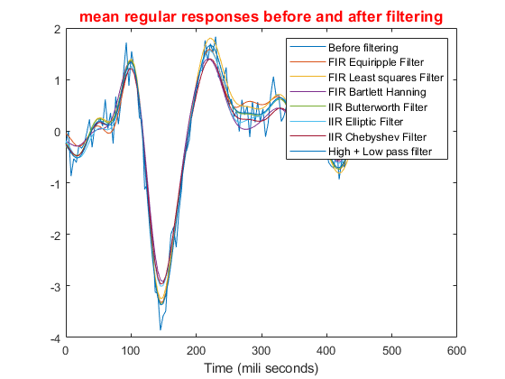
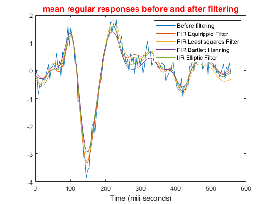
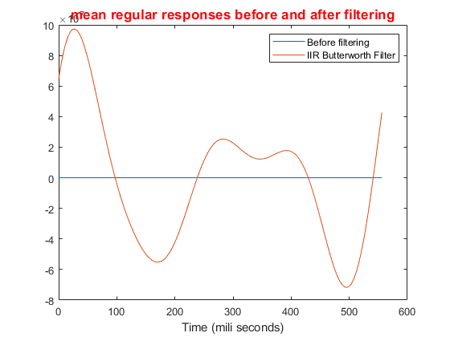
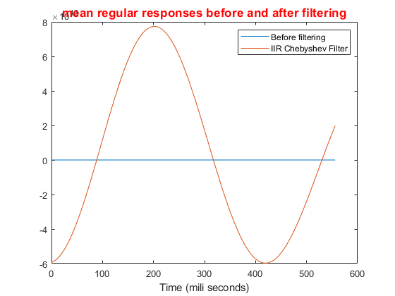
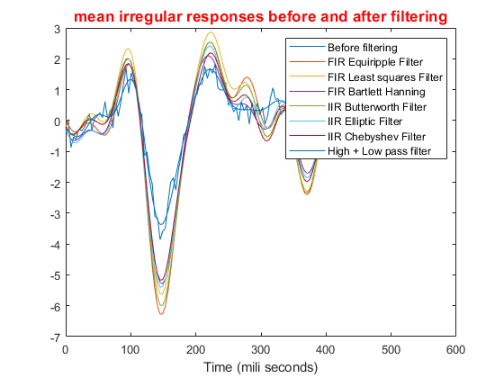
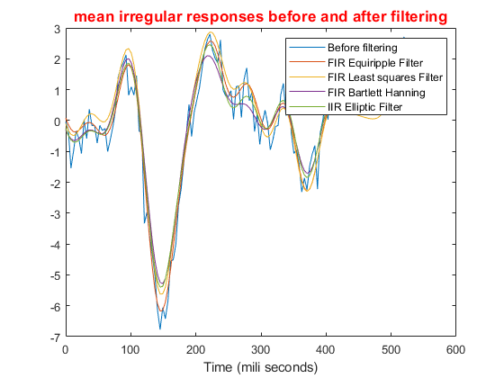
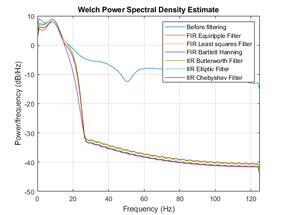
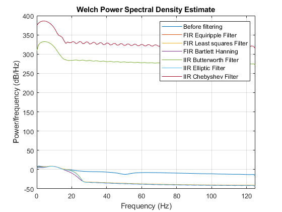
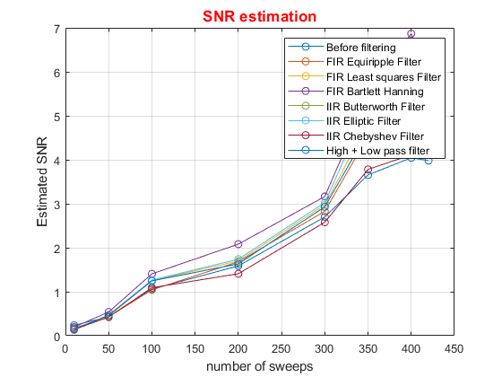
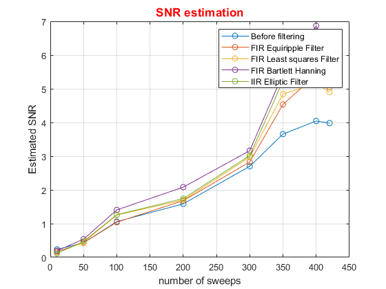
Section3: Picking the best Filter
close all %if we consider the estimated SNR on: % best IIR filter: Window_Bartlett_Hanning_Filter % best FIR filter: Elliptic_Filter with filtfilt method figure(Name='PSD comparison') psd(h,eeg, 'fs', Fs), hold on, psd(h,f3_eeg, 'fs', Fs), hold on, psd(h,f5_filt_eeg, 'fs', Fs) legend('Before filtering', 'FIR Bartlett Hanning','IIR Elliptic Filter') figure(Name='Mean regular response comparison') plot(t, Mean_reg), hold on, plot(t, Mean_reg_f3), hold on, plot(t, Mean_reg_f5_filt), xlabel('Time (mili seconds)'), title('Mean regular response'), legend('Before filtering', 'FIR Bartlett Hanning','IIR Elliptic Filter') %however if we consider the estimated SNR and the frequency response of filter as well,: %best filter: IIR_Butterworth_Filter
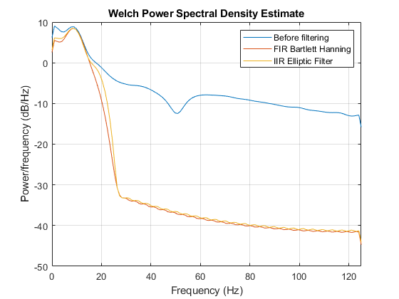
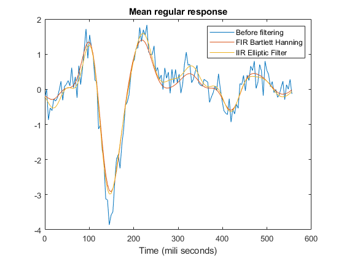
Section4: Comparing IIR_Butterworth_Filter with Ideal 1to20 Hz filter!
close all x = fft(eeg); x(1:1*2*Fs)=0; x(20*2*Fs:length(x))=0; ideal_filtered_eeg = ifft(x); [t, Mean_reg_ideal] = Sync_mean(real(ideal_filtered_eeg), indf,sweeps_interval , Fs); figure(Name='SNR comparison (ideal 1to20Hz and butterworth') Ideal_SNR = SNR_estimate(ideal_filtered_eeg,indf,sweeps_interval2,Fs,n_of_sweeps); plot(n_of_sweeps, snr,"Marker","o" ), title('SNR estimation', 'FontSize',13,'Color','red'), xlabel('number of sweeps'), ylabel('Estimated SNR'), grid on hold on, plot(n_of_sweeps, Ideal_SNR,"Marker","o" ), hold on , plot(n_of_sweeps, snr4,"Marker","o" ) legend('Before filtering', 'Ideal 1to20','IIR Butterworth Filter') figure(Name='Comparing mean regular responses before and after filtering(ideal 1to20Hz and butterworth)') plot(t, Mean_reg), title('mean regular responses before and after filtering', 'FontSize',13,'Color','red'), xlabel('Time (mili seconds)'), hold on, plot(t, Mean_reg_f4), hold on, plot(t, Mean_reg_ideal) legend('Before filtering', 'IIR Butterworth Filter', 'Ideal 1to20')
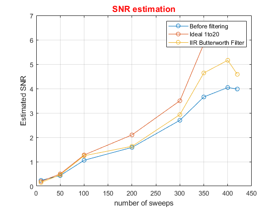
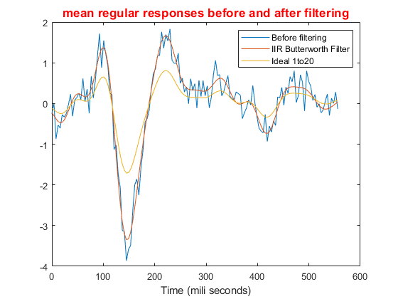